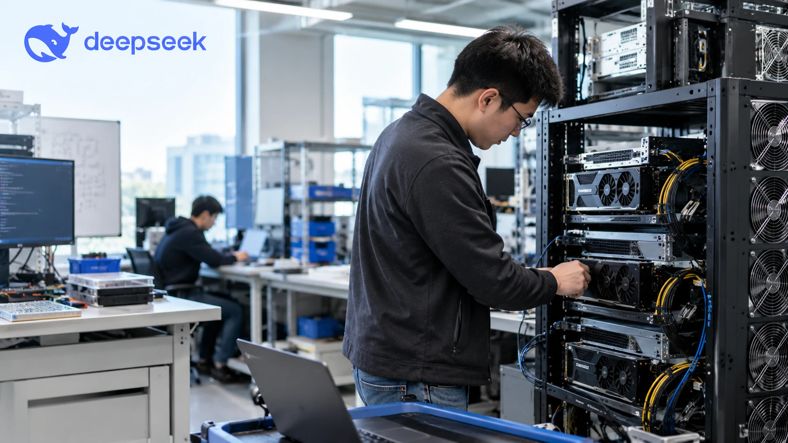

Coding-Agent Prototype on DeepSeek’s GitHub Tests More Autonomous Workflows
Code on DeepSeek’s GitHub explores software tasks through to pull requests. The repository describes a prototype rather than a production-ready product.

An experimental coding-agent project published under DeepSeek's name on GitHub on October 31 describes software that can monitor repositories, accept approved tasks and prepare pull requests. Its documentation says the prototype is not ready for production use. The release illustrates an approach to AI-assisted software development, rather than a commercial product launch.
What the prototype actually does
The project is designed for one GitHub repository at a time. It can listen for events from GitHub and, optionally, from Feishu, a workplace communications platform. When an authorized person requests work, the system can create a task, assign it to an agent session and return with an outcome such as a proposed pull request.
That sequence matters because many existing coding assistants still require a developer to start an interaction, describe the next step and review progress repeatedly. The DeepSeek team is investigating whether an agent can shoulder more of the coordination without generating unnecessary interruptions. Rather than presenting a general-purpose assistant for every task, the prototype focuses on a narrow engineering workflow with explicit permissions and visible human checkpoints.
Its documentation emphasizes the cost of attention. The stated principle is to use as little human attention as possible while delivering useful work. The agent is supposed to act only when someone authorized requests it or when a team-defined rule permits the action. Work initiated by broader rules can begin in a recording-only mode, letting operators inspect what the agent would have done before trusting it with actual changes.
Why permission design is central
The prototype's philosophy and authorization documents recognize that tension. Operators are meant to define who can request tasks, what sources of input the system accepts and which actions require human intervention. A web panel surfaces items requiring attention rather than trying to become another constantly active dashboard.
A different type of AI-agent competition
The open-source release may nevertheless influence the market by making workflow ideas and implementation choices available to developers. Its MIT license permits teams to study and adapt the published code. For companies already experimenting with internal coding agents, that can reduce the work involved in testing approaches to task routing, authorization and reporting.
What teams should watch next
The most immediate test will be whether the system can carry realistic tasks through to reviewable results while remaining predictable. Useful evidence would include reproducible coding benchmarks, documented security boundaries, deployment reports and measurements of the human time required to supervise successful work.
For business readers, the broader importance lies in the potential shift from selling access to powerful AI models toward selling dependable work execution. The value of an agent platform will increasingly depend on whether it can integrate with existing tools and reduce operational overhead, not just answer prompts. That question also underlies TTN Finance's coverage of publisher controls for AI systems, where permissions and legitimate uses of automated systems are similarly central.
Sources and methodology
Primary sources and supporting reporting.